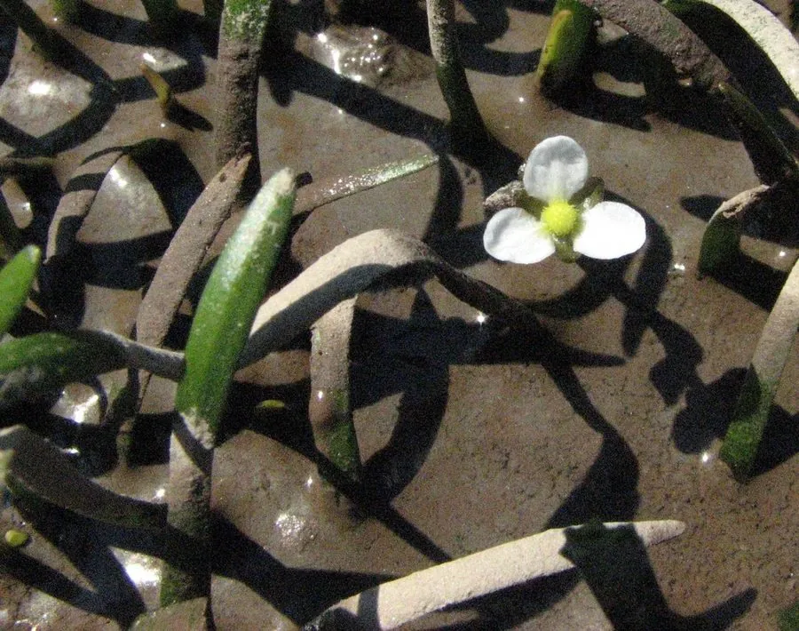

水生植物 · 植物界
小水兰 Sagittaria subulata

泽泻科多年生水生草本，叶带状或匙形、株型低矮，靠走茎蔓延成丛，是水族箱前景与中景的实用水草。
- 分类
- 门被子植物门纲木兰纲目泽泻目科泽泻科属慈姑属
- 栖息环境
- 沼泽、溪流边缘与池塘浅水，喜光、耐低温、适应力强
- 地理分布
- 原产北美东部，现世界各地水族箱与湿地景观栽培
- 保护级别
- 暂无评估；分布较广，种群稳定
物种志
小水兰为泽泻科慈姑属多年生水生草本，具细长匍匐走茎。沉水叶带状，长 10–30 厘米，宽 0.3–1 厘米，深绿色；挺水叶则变为匙形或卵形，具长叶柄。花葶挺出水面，花白色，三瓣，花药黄色，花期 6–9 月；瘦果扁平，具翅。
小水兰原产北美东部的沼泽、溪流与池塘浅水，适宜水深 5–40 厘米，喜中强光与凉爽水温（20–26 ℃），对水质适应范围较宽。它靠走茎迅速蔓延，能在底砂上形成低矮的草甸，既适合作为前景草，也可用于中景与池塘边缘。与迷你矮珍珠相比，它更耐低光、更易栽培，是新手布置“草原”的实用选择。栽培时需定期修剪过密的走茎，避免遮蔽；分株或剪取带根的走茎小株即可繁殖。
形态与习性
- 株高叶长 10–30 厘米，株型低矮
- 水深适宜水深 5–40 厘米，可挺水或沉水
- 水质适应软水至中等硬度，pH 6.5–7.5
- 光照中强光即可，耐低光优于迷你矮珍珠
- 生长靠走茎蔓延，形成低矮草甸
- 繁殖剪取带根走茎小株分栽
趣味知识
- 小水兰的沉水叶是细长带状，挺水叶却变成匙形，同一株植物两种叶形差别很大。
- 它靠走茎在底砂中穿行，一处栽种几个月就能蔓延成片。
- 相比娇气的迷你矮珍珠，小水兰更耐低光，是新手做“草坪”的稳妥选择。
- 它的瘦果带翅，能浮在水面随水流传播。